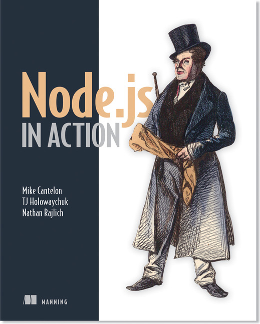
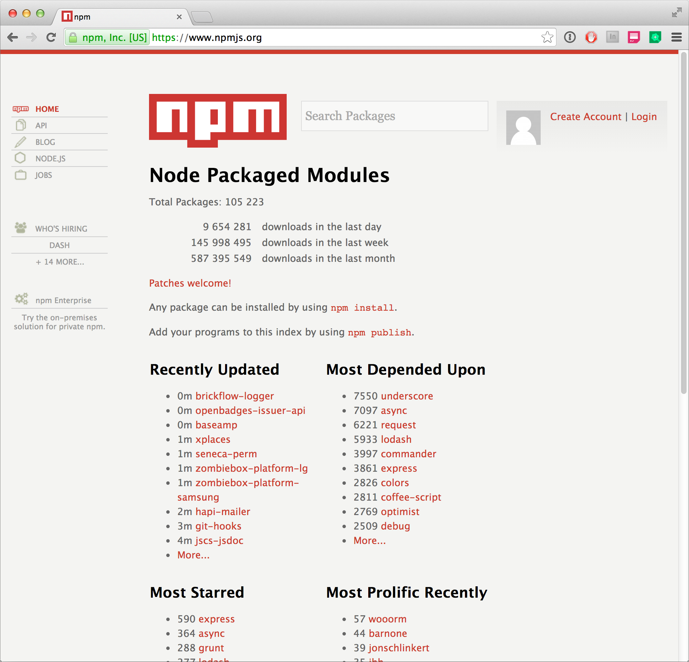

Server Side Scripting in 
SSS — Lesson 1
http://cmda.github.io/sss-course/lesson1
Today
- Introductie
- Expectations
- Getting started
- Javascript
- Wrap up
Introductie
Wie
Vincent Vijn
HvA
Edwin van der Graaf
Digitpaint
Flurin Egger
Digitpaint
Organisatie
https://github.com/CMDA/sss-course
Heb je vragen?
Github issues!
Leerdoelen
Node.js is geen doel op zich ...
... je leert de basisprincipes van een applicatie maken.
Lessen
- 7 hoorcolleges
- 8 werkcolleges
- 2 deeltoetsen
- 1 eindopdracht
Deeltoetsen
Deeltoets 1
Schriftelijk (15 min) in het werkcollege
Deze toets is Pass/Fail
Deeltoets 2
In code (30-45 min) tijdens het werkcollege
Deze toets is Pass/Fail
Eindopdracht
Het maken van een echte applicatie
Voor deze toets krijg je een cijfer
Herkansing
- Eén opdracht voor deeltoets
- De eindopdracht mag je verbeteren
Boek
Elke week 1-2 hoofdstukken
Hoorcollege
- Nieuw lesmateraal
- Uitleg nieuwe opdrachten
Before we start...
... we have some expectations
Terminal
Basic terminal/powershell knowledge (`cd`/`mkdir`/etc.)
Resources:
- http://blog.teamtreehouse.com/introduction-to-the-mac-os-x-command-line
- http://cli.learncodethehardway.org/book/
Text editor
You have text-editor and are not afraid to use it
Editors
- Sublime text
- Brackes
- VIM
You have basic knowledge of git an you know how to clone, commit, push and pull.
Resources
- http://git-scm.com/
- http://git-scm.com/book/en/v2
Github
- You have an account
- You know how to fork
Let's get this party started!
The Node.js eco-system
... and how to get started
What is Node.js?
Node.js® is a platform built on Chrome's JavaScript runtime for easily building fast, scalable network applications.
Node.js uses an event-driven, non-blocking I/O model that makes it lightweight and efficient, perfect for data-intensive real-time applications that run across distributed devices.
What can we use it for?
- (terminal) scripts
- desktop applications
- web applications
- hardware
Installing Node.js*
- Go to http:///nodejs.org
- Click "install"
- Follow the instructions on screen
- Done!
* on Windows or OS X
Test the installation
PS C:\Users> node -v
v0.10.33
$ node -v
v0.10.33
REPL
Read - Eval - Print - LoopTo start the REPL
$ node
>
Some examples
$ node
> 2 + 3
5
> 0 == true
false
> 1 == true
true # always use ===
> 1 === true
false
>
Test modules
Given you've written a small module, square.js
// square.js
var square = function(x){
return x * x;
};
module.exports = square;
Test modules
$ node # start the repl
> var square = require('./square.js')
undefined
> square
[Function]
> square(2)
4
>
REPL
DEMO
What is npm?
npm runs through the command line and manages dependencies for an application. It also allows users to install Node.js applications that are available on the npm registry. Wikipedia
Why packages?
- Re-use of code
- Distributable
- Installable
npm.org
npm install
- Use
npm install underscoreto install a package into your project. - Packages are installed in the current directory's subdirectory
node_modules - Use
npm install -g packagenameto install a package globally
Using an installed package
$ node
> var u = require('underscore')
undefined
> u.map([1,2,3,4], function(v){ return v * 2; })
[ 2, 4, 6, 8 ]
DEMO
package.json
Store your project's metadata including dependencies in a file so someone else can use your project.
Example
{
"name": "my-awesome-lib",
"version": "0.0.1",
"description": "First exercise for server-side
scripting in node.js course",
"private": true,
"main": "index.js",
"dependencies": {
"request": "~2.47.0"
},
"devDependencies": {
"mocha": "~2.0.1"
},
"scripts": {
"test": "mocha"
},
"keywords": ["nodejs", "course"],
"license": "MIT"
}
npm init
Generate a package.json
$ npm init
Save dependencies
$ npm install --save underscore
DEMO
node_modules in version control, put package.json in version control instead.
package.json
Starting someone else's project
- Git clone / unzip / whatever
npm install- That's it!
Coffebreak
Back in 10 minutes
Quick overview
Flow
if/else
The if statement executes a statement if a specified condition is true. If the condition is false, another statement can be executed.
if (condition) {
// statement1 (condition is true)
} else {
// statement2 (condition is false)
}
try{} catch(){}
The try...catch statement marks a block of statements to try, and specifies a response, should an exception be thrown.
try {
throw "myException"; // generates an exception
} catch (e) {
// statements to handle any exceptions
logMyErrors(e); // pass exception object to error handler
}
for(){}
The for statement creates a loop that consists of three optional expressions, enclosed in parentheses and separated by semicolons, followed by a statement executed in the loop.
for ([initialization]; [condition]; [final-expression]){
// statements
}
for(var i=0; i < 10; i++){
// statements
}
while
The while statement creates a loop that executes a specified statement as long as the test condition evaluates to true. The condition is evaluated before executing the statement.
while (condition) {
// statement
}
function(){}
The function statement declares function with the specified parameters with an optional return value.
function name([param,[, param,[..., param]]]) {
// statements
return true // optional
}
Modules
What is a module?
A way to structure your project and share your code
- A file (or a package)
- It returns something
Writing modules
Node.js modules are flexible, they can return:
- Objects
- Functions
- Variables
Example
// version.js
module.exports = "1.0.0";
// main.js
var version = require("./version");
console.log(version); // Outputs 1.0.0
Example
// string-helpers.js
var tools = {
capitalize : function(string){
return string.charAt(0).toUpperCase() + string.slice(1);
}
};
module.exports = tools;
// main.js
var tools = require('tools');
tools.capitalize("node FTW!"); // => Node FTW!
Debugging
Console output
Printing output to the console
console.log()
// Why doesn't this work!?
var a = 100;
console.log("Debug value", a);
console.log("String 1: %s and Numer 2: %d", "string", 3);
Further console functions
console.time(label)console.timeEnd(label)console.trace(message)
node-inspector
Stop execution and inspect the current callstack
Install node-inspector
$ npm install -g node-inspector
...
$ node-debug -v
v0.7.4
debugger statement
// debugger.js
var a = "bug!";
function potentiallyBuggyCode(param) {
var b = "another bug!";
// do potentially buggy stuff to examine, step through, etc.
debugger;
}
potentiallyBuggyCode("thing");
Running node-inspector
$ node-debug debugger.js
Node Inspector is now available from http://localhost:8080/debug?port=5858
Debugging `html/assets/lesson1/debugger.js`
debugger listening on port 5858
node-inspector in action
JSHint
JSHint is a community-driven tool to detect errors and potential problems in JavaScript code and to enforce your team's coding conventions. jshint.com
Install JSHint
$ npm install -g jshint
...
$ jshint -v
jshint v2.5.10
Using JSHint
$ jshint <filename>
Using JSHint
// faulty.js
// Let's put in some syntax errors!
var a = ;
if(a == true){
console.log("yes!")
}
From your texteditor
Most text-editors have plugins/packages to run JSHint from there
Wrapping up
What we learned today
- Install node.js and using the REPL
- Installing and using NPM packages in combination with package.json
- Debugging with console.log, node-inspector and jshint
- Basic JS control flow
- Modules
Werkcollege en huiswerk
Huiswerk: lezen
- Hoodstuk 3, t/m 3.2.3 (p 37 t/m 58)
- Appendix A5 (p 363 t/m 366)
- Appendix B1 t/m B3.2 (p 367 t/m 371)
Klaar voor werkcollege
Huiswerk: doen
- Node.js installeren
- Terminal/Git/etc. werkend hebben
- Github account aanmaken als je die nog niet hebt
- Alvast spieken naar https://github.com/CMDA/sss-exercises
Klaar voor werkcollege